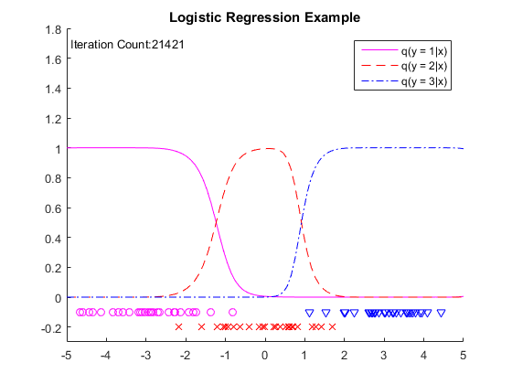

Example 10.1 Logistic Regression
- Result in book : Figure 10.2
- Code in book : Figure 10.3
- Output : eg10_1.png
- Usage : eg10_1(), eg10_1(90, 3, 100)
Contents
Source Code
function eg10_1(n, c, N)
rng(0, 'v5uniform'); rng(0, 'v5normal');
if nargin < 3
n = 90; c = 3; N = 100;
end
y = ones(n / c, 1) * (1 : c);
y = y(:);
x = randn(n / c, c) + repmat(linspace(-3, 3, c), n / c, 1);
x = x(:);
hh = 2 * 1 ^ 2;
t0 = randn(n, c); t = t0;
X = linspace(-5, 5, N )';
x2 = x .^ 2;
X2 = X .^ 2;
K = exp(-(repmat(X2, 1, n) + repmat(x2', N, 1) - 2 * X * x') / hh);
for o = 1 : n * 1000
ii = ceil(rand * n);
yi = y(ii);
ki = exp(-(x - x(ii)) .^ 2 / hh);
ci = exp(ki' * t0);
t = t0 - 0.1 * (ki * ci) / (1 + sum(ci));
t(:, yi) = t(:, yi) + 0.1 * ki;
if norm(t - t0) < 0.000001, break, end
t0 = t;
end
C = exp(K * t);
C = C ./ repmat(sum(C, 2), 1, c);
figure('Name', 'Logistic Regression Example'); clf; hold on;
title('Logistic Regression Example');
axis([-5 5 -0.3 1.8]);
plot(X, C(:, 1), 'm-');
plot(X, C(:, 2 ), 'r--');
plot(X, C(:, 3), 'b-.');
plot(x(y == 1), -0.1 * ones(n / c, 1), 'mo');
plot(x(y == 2), -0.2 * ones(n / c, 1), 'rx');
plot(x(y == 3), -0.1 * ones(n / c, 1), 'bv');
legend('q(y = 1|x)', 'q(y = 2|x)', 'q(y = 3|x)')
text(-4.9, 1.7, strcat('Iteration Count: ', num2str(o)));
saveas(gcf, 'eg10_1', 'png');
end
